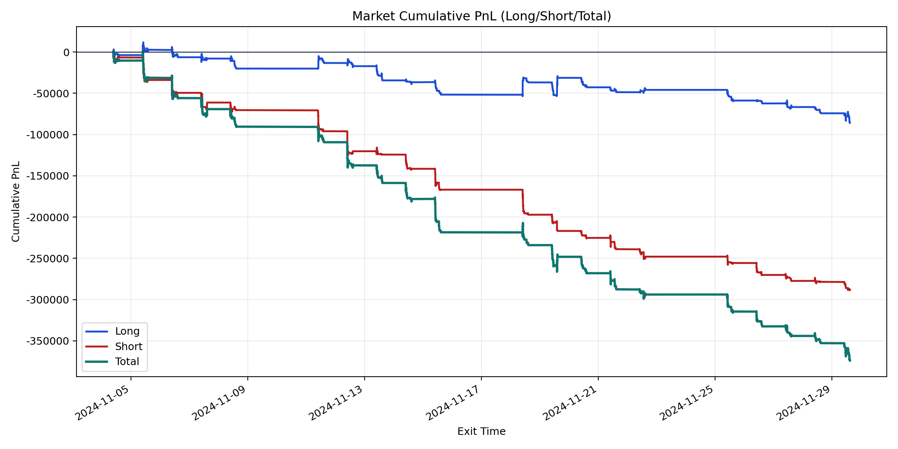
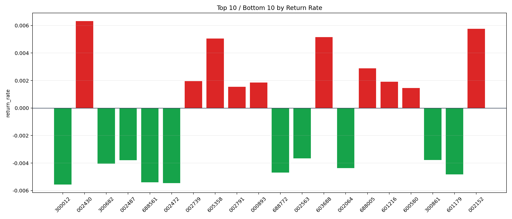

| repo_root | /home/haoranyou/data/output/dynamic_AUM_TAKER_index500 |
|---|---|
| period_months | 1 |
| period_label | 2024-11-04_to_2024-11-29 |
| start_time | 2024-11-04 09:47:02 |
| end_time | 2024-11-29 14:41:27 |
| n_trades | 19278 |
| n_symbols | 152 |
| total_pnl | -373863.4023500003 |
| long_total_pnl | -85828.00259999682 |
| short_total_pnl | -288035.3997500035 |
| total_entry_notional | 350794969.0 |
| long_entry_notional | 170448920.00000003 |
| short_entry_notional | 180346049.00000003 |
| total_return_rate | -0.001065760445241734 |
| long_return_rate | -0.0005035409001124607 |
| short_return_rate | -0.001597126199033079 |
| top_symbols_by_return | ["002430", "002152", "603688", "605358", "688005", "002739", "601216", "000893", "002791", "600580"] |
| bottom_symbols_by_return | ["300012", "002472", "688561", "601179", "688772", "002064", "300682", "002487", "300861", "002563"] |

